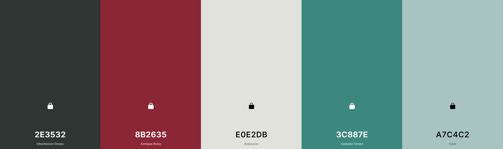

Survol des techniques
____________________
Accueil
Maquette
Au niveau technique, plusieurs défis nous attendent pour ce projet. En effet, voici les grandes lignes de notre vision. Lorsque l'on arriverait sur le site web, le logo s’animerait. Les « O » de Profolio (le nom du site) se transformeraient en une illustration d'une chaîne, un lien direct avec la visée de notre projet. Ensuite, il serait possible de cliquer sur des flèches, soit à gauche ou à droite, pour afficher les portfolios des gens. Aussi, quand notre souris survolerait le profil d’un candidat, il y aurait deux types d'animations ; l'apparition de l’affichage de son nom ainsi qu'une petite animation de sa photo de profil, soit avec des couleurs ou un mouvement simple. Nous allons utiliser Javascript pour faire des « sliders » afin de permettre le changement des profils avec les flèches, tout comme pour les animations, notamment quand on consulte un profil en faisant l’apparition d’images et de texte. De plus, nous voulons instaurer un système de « scroll » avec la souris quand on consulte un portfolio. Voici respectivement des liens qui peuvent nous aider pour la programmation des flèches, des animations d’images et pour l’effet de défilement avec la souris. L'image ci-dessous est une inspiration pour la palette de couleurs.
